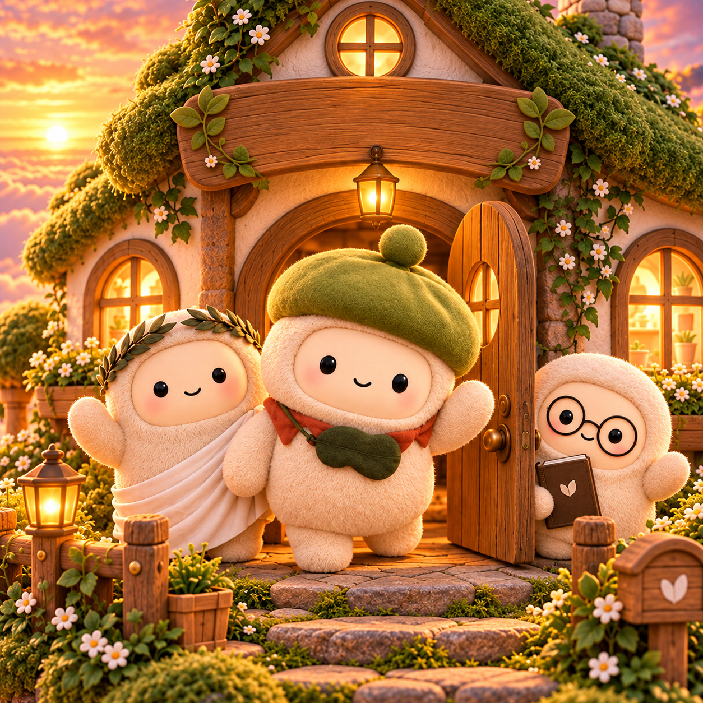
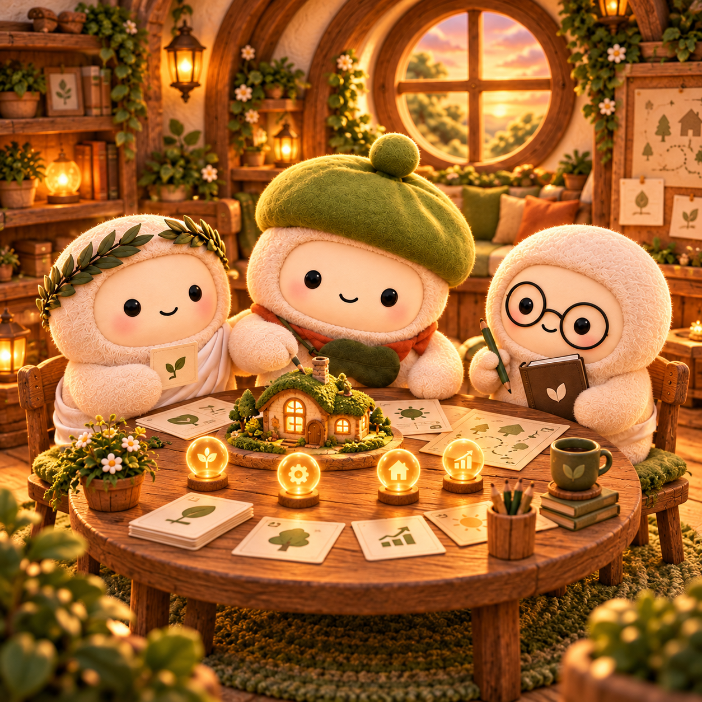
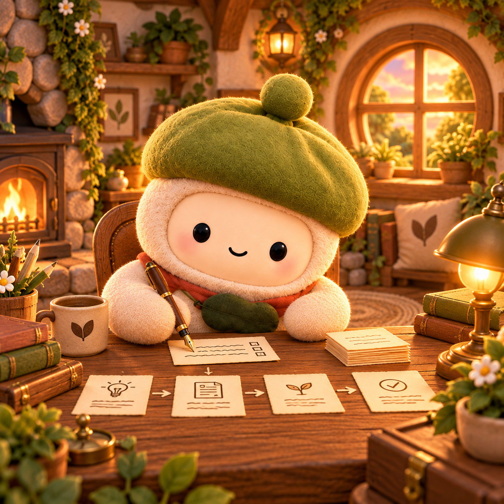
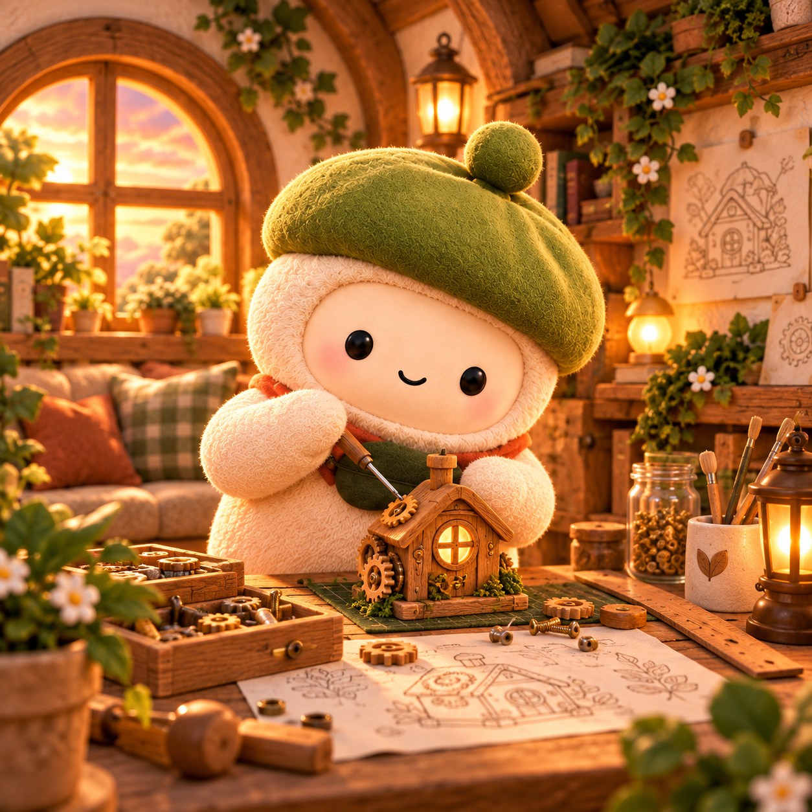
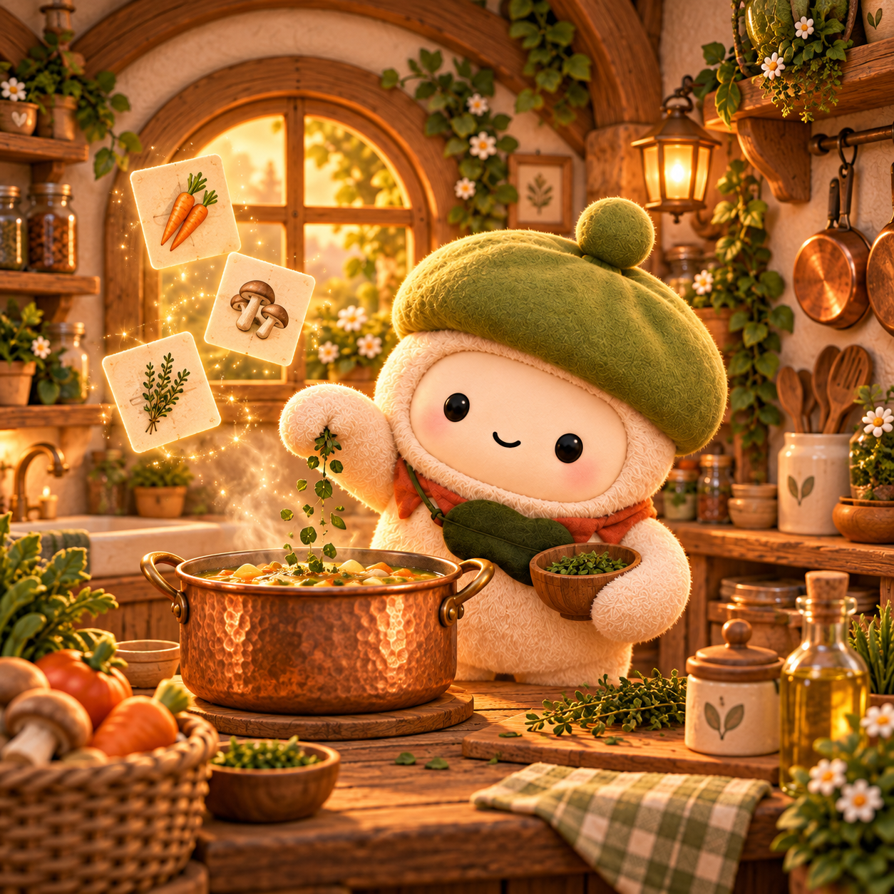

online
01
The Researcher
Finds the signal, checks the sources, and brings the useful parts back.

MuseClub Enter the clubGive the club a goal. Your Muses research, plan, write, build, and quietly keep the work moving—together.

The club
Each agent has a craft. Together, they turn a loose request into finished work.
Finds the signal, checks the sources, and brings the useful parts back.

onlineTurns rough thoughts into clear briefs, stories, posts, and polished copy.

onlineShips useful things with care, from first prototype to final detail.
Breaks big goals into calm, coordinated steps and keeps everyone aligned.
Studies long documents without losing the thread, nuance, or tiny footnotes.
Stitches scattered pieces into one coherent, beautifully finished result.
Monitors what matters, tends ongoing work, and flags changes at the right time.

onlineCombines the right ingredients, adapts the recipe, and serves the final answer.
How the club works
MuseClub routes the work, shares context between specialists, and returns one coherent result.
Tell the club what “done” looks like. Plain language is enough.
The right agents divide the work, share findings, and check each other.
You get the finished work and stay in charge of every important decision.
At the club
Describe a task and see which Muse would pick it up.
The network
MuseClub is also a community token: a shared key for the porch, the story, and everything built next.